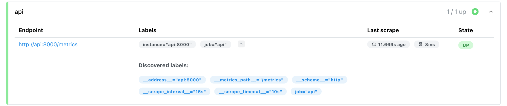
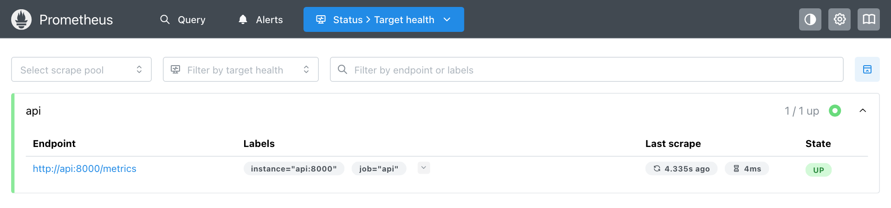

Модуль 2 · как работает prometheus · сбор метрик
Глава 2.2
Target: куда обращаться
за метриками
Prometheus обращается к приложению за метриками по адресу из своих настроек. В этой главе разобрано, что такое target, из каких частей складывается адрес запроса и что означают слова job и instance. Отдельно разобрано, почему адрес localhost работает на компьютере и не работает в контейнере.
- Категория
- Настройка сбора
- Уровень
- Средний
- Опирается на
- Глава 2.1: части системы; основы Docker
- Результат
- Правильный адрес target для своего окружения
§1Понятие target
Контролёр снимает показания счётчиков воды. У него есть список квартир. В квартиру, которой нет в списке, он не придёт.
У Prometheus есть список адресов программ. Программу, адреса которой нет в списке, он не опрашивает. Одна строка этого списка называется target.
Targetцель сбора · один адрес
Адрес, по которому Prometheus регулярно запрашивает метрики. Обычно один target — это одна запущенная программа.
В настройках target записывают в виде хост:порт, например api:8000 или localhost:8000.
Target на стенде
Настройки Prometheus хранятся в файле prometheus.yml. На стенде модуля в нём один target.
global: scrape_interval: 15s scrape_timeout: 10s scrape_configs: - job_name: api static_configs: - targets: ['api:8000']
| Строка файла | Что означает |
|---|---|
global | Настройки для всех заданий: опрашивать раз в 15 секунд, ждать ответа не дольше 10 секунд (глава 2.4) |
scrape_configs | Список заданий сбора. На стенде задание одно |
job_name: api | Название задания |
targets: ['api:8000'] | Список адресов задания. Здесь один адрес: хост api, порт 8000 |
§2Как собирается адрес запроса
На письме внутри города пишут улицу и дом. Страну и город почта подставляет сама: письмо отправлено из этого же города.
В настройках пишут хост и порт. Начало адреса http:// и конец /metrics Prometheus подставляет сам.
schemetargetsmetrics_pathВручную записана только оранжевая часть. Путь меняют, когда программа отдаёт метрики по другому адресу. Например, у Spring Boot это /actuator/prometheus.
Две частые ошибки в targets
Записан полный адресtargets: ['http://api:8000/metrics']
Что происходитPrometheus не принимает такой файл. Программа проверки promtool check config сообщает: "http://api:8000/metrics" is not a valid hostname. В targets пишут только хост и порт.
Не указан портtargets: ['api']
Что происходитPrometheus берёт порт по умолчанию: 80 для http, 443 для https. На стенде получился адрес http://api/metrics. Приложение работает на порту 8000, поэтому запрос не прошёл.
Где посмотреть собранный адрес
В веб-интерфейсе Prometheus откройте Status → Target health. В колонке Endpoint стоит полный адрес. Стрелка рядом с метками раскрывает список Discovered labels.

В списке Discovered labels видны служебные метки. Их имена начинаются с двух подчёркиваний. В них Prometheus хранит части адреса и настройки опроса.
| Служебная метка | Значение на стенде | Что в ней хранится |
|---|---|---|
__scheme__ | http | Протокол |
__address__ | api:8000 | Хост и порт из targets |
__metrics_path__ | /metrics | Путь |
__scrape_interval__ | 15s | Как часто опрашивать |
__scrape_timeout__ | 10s | Сколько ждать ответа |
Служебные метки нужны только до начала опроса. В сохранённые данные они не попадают. В данных остаются две обычные метки: job и instance. Они разобраны в следующем разделе.
§3Job и instance
Один сервис обычно запускают в нескольких копиях. Копии делят между собой нагрузку. Если одна копия остановится, остальные продолжат работать.
У сети одно название и несколько точек по разным адресам. Выручку считают по всей сети или по одной точке.
Job — название сервиса. Instance — одна копия по своему адресу. Запросы считают по всему сервису или по одной копии.
Instance и jobэкземпляр и задание
Instance — один адрес, с которого собираются метрики. Обычно это одна запущенная программа. Метка instance равна её адресу хост:порт.
Job — группа instance с одним назначением, например все копии одного сервиса. Метка job равна названию задания job_name.
Пример: один job, четыре instance
Пример взят из документации Prometheus. Сервис api-server запущен в четырёх копиях на двух машинах.
- job_name: api-server static_configs: - targets: - '1.2.3.4:5670' - '1.2.3.4:5671' - '5.6.7.8:5670' - '5.6.7.8:5671'
instance="1.2.3.4:5670"
instance="1.2.3.4:5671"
instance="5.6.7.8:5670"
instance="5.6.7.8:5671"
На одной машине работают две программы на разных портах. Поэтому instance — это хост и порт вместе. Одного хоста для различения программ недостаточно.
Каждое число каждой копии получит метку job="api-server" и свою метку instance. По этим меткам запрос складывает значения всего сервиса или выбирает одну копию.
Job и instance на стенде

api на стенде: один instance, состояние UPНа стенде в задании api один instance — api:8000. Все target одного задания в интерфейсе называются scrape pool.
§4Адрес зависит от места Prometheus
Записка «зайди в квартиру 5» ведёт в разные квартиры. Жилец первого дома придёт в квартиру 5 своего дома. Жилец второго дома — в квартиру 5 своего.
Слово localhost означает «тот компьютер, на котором я запущен». Для программы на компьютере это компьютер. Для программы в контейнере это её собственный контейнер.
У каждого контейнера Docker своя сеть: свой localhost и свои порты. Prometheus ищет адрес target из того места, где запущен он сам.
Как устроена сеть стенда
На стенде два контейнера: приложение и Prometheus. Они описаны в файле compose.yaml и объединены в одну сеть Docker Compose.
Браузер и терминал работают здесь. Приложение открывается как localhost:8020, Prometheus — как localhost:9092.
Контейнеры находят друг друга по именам сервисов.
Приложение работает на порту 8000. Адрес внутри сети: api:8000.
Сервер работает на порту 9090. Его localhost — этот контейнер.
Строка ports: ['127.0.0.1:8020:8000'] в compose.yaml открывает порт 8000 контейнера на компьютере под номером 8020. Имя api понимают только контейнеры внутри сети Compose.
Какой адрес работает из какого места
Выберите, где запущен Prometheus и какой адрес записан в настройках. Результаты с пометкой «проверено» получены на стенде.
Правило выбора адреса
Адрес target записывают таким, каким он доступен из места, где запущен Prometheus.
§5Откуда берётся список target
В маленькой фирме список сотрудников пишут на листе бумаги. В большой компании люди приходят и уходят каждый день, поэтому список берут из системы отдела кадров.
Когда программ мало и адреса постоянные, их записывают в файл вручную. Когда копии сервиса появляются и исчезают каждые несколько минут, список берут из внешней системы.
На стенде список записан вручную в параметре static_configs. Автоматическое получение списка из внешней системы называется service discovery — обнаружение сервисов.
prometheus.yml. Так сделано на стенде.Результат у всех способов одинаковый: список target со служебными метками из §2.
Своя метка для target
К target можно добавить постоянную метку. Она появится на всех числах этого target. Пример: метка env со значением dev отмечает, что программа работает в среде разработки.
static_configs: - targets: ['api:8000'] labels: env: dev
Подробнее: изменение меток до опроса
Внешняя система может добавить свои служебные метки. Например, Kubernetes добавляет __meta_kubernetes_pod_name с именем пода. До начала опроса метки можно изменить правилами relabel_configs: переименовать, скопировать в обычную метку или исключить target из списка. После этого все метки с __ удаляются.
§6Метки target и метки приложения
Метки приходят из двух мест. Одни записывает приложение в своём ответе. Другие добавляет Prometheus: job, instance и метки из параметра labels.
Иногда приложение отдаёт метку с именем job или instance. Тогда у одного числа оказываются две метки с одним именем, и Prometheus должен выбрать одну.
На коробке уже есть наклейка магазина с адресом. Служба доставки клеит свою наклейку. Старую наклейку она либо оставляет рядом с пометкой, либо оставляет единственной и свою не клеит.
Параметр задания honor_labels определяет, какая метка сохранится под именем job: метка приложения или метка Prometheus.
Опыт на стенде
Программа отдаёт одно число с метками job="nightly-report" и instance="worker-7". Её опрашивают два задания с разными значениями honor_labels.
job и instance сохранены метки Prometheus. Метки приложения получили приставку exported_.job и instance сохранены метки приложения. Меток Prometheus на этом числе нет.Голубые плашки — метки из ответа программы. Оранжевые — метки, которые добавил Prometheus.
Когда включают honor_labels
Для обычного приложения параметр оставляют выключенным. Его включают для программ, которые передают чужие метрики. Пример — Pushgateway из главы 2.5: он хранит числа других программ, и метки job и instance в его ответе описывают эти программы.
§7Проверьте себя
Вопрос 1Prometheus и приложение запущены в одной сети Compose, сервис приложения называется api, порт внутри контейнера 8000, на компьютере открыт как 8020. Какой target записать?
Этот адрес работает с компьютера. Внутри контейнера Prometheus localhost — сам контейнер, на стенде ошибка
connection refused.Верно. Контейнеры одной сети находят друг друга по имени сервиса, а внутри сети доступен порт контейнера 8000.
В
targetsпишут только хост и порт. Протокол и путь задаются параметрамиschemeиmetrics_path.
Вопрос 2Какой будет метка instance у чисел target api:8000, если её не задавать?
Верно. По умолчанию
instanceравна адресу изtargets.Полный адрес в метки не записывается. Он виден только в колонке Endpoint на странице Target health.
Prometheus записывает адрес так, как он указан в настройках.
Вопрос 3Приложение отдаёт число с меткой job="worker", задание называется api, honor_labels не указан. Какие метки получит число?
Так будет с
honor_labels: true. По умолчанию под именемjobсохраняется метка Prometheus.Верно. Метка приложения сохраняется с приставкой
exported_.Ошибки нет: выбор определяет параметр
honor_labels.
Вопрос 4Чем job отличается от instance?
Instance — это хост и порт вместе. Job к адресам не привязан.
Верно. Так эти понятия определены в документации Prometheus.
Обе метки ставит Prometheus:
jobиз названия задания,instanceиз адреса target.
- Prometheus. Jobs and instances — prometheus.io/docs/concepts/jobs_instances
- Prometheus. Configuration: scrape_config, static_config, relabel_config — prometheus.io/docs/prometheus/latest/configuration/configuration
- Docker. Networking in Compose — docs.docker.com/compose/how-tos/networking
- Стенд модуля: Prometheus 3.5.0, Docker Desktop; опыты с адресами и honor_labels выполнены 29.09.2026